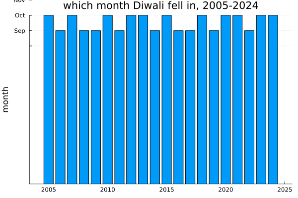
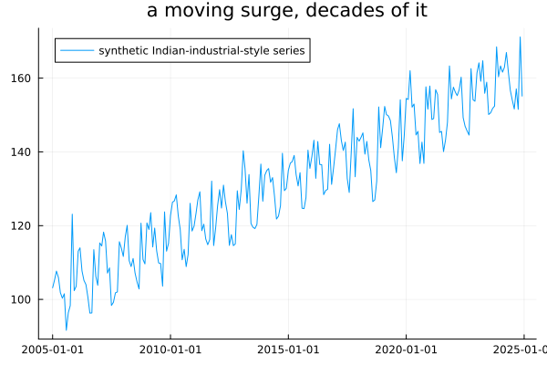
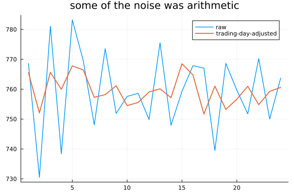
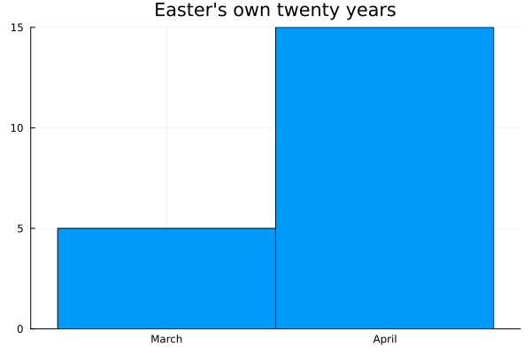
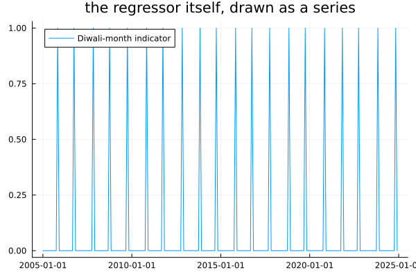
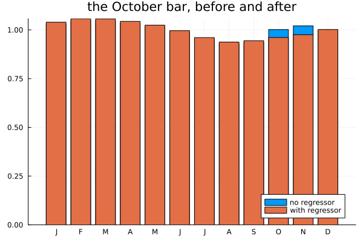

Calendar Effects
Chapter 1's own india box said this chapter would return to Diwali "properly." Chapters 5, 16 and 20 each hit the same wall from a different direction — an autocorrelation that blurs, a decomposition that cannot fit a fourth period, a SARIMA model that compromises wrong in both months — and each one pointed here. This is that chapter.
October is not October
using TSAnalytics, Plots, Random, Dates, Statistics, LinearAlgebra
diwali = Dict(
2005=>Date(2005,11,1), 2006=>Date(2006,10,21), 2007=>Date(2007,11,9),
2008=>Date(2008,10,28), 2009=>Date(2009,10,17), 2010=>Date(2010,11,5),
2011=>Date(2011,10,26), 2012=>Date(2012,11,13), 2013=>Date(2013,11,3),
2014=>Date(2014,10,23), 2015=>Date(2015,11,11), 2016=>Date(2016,10,30),
2017=>Date(2017,10,19), 2018=>Date(2018,11,7), 2019=>Date(2019,10,27),
2020=>Date(2020,11,14), 2021=>Date(2021,11,4), 2022=>Date(2022,10,24),
2023=>Date(2023,11,12), 2024=>Date(2024,11,1), 2025=>Date(2025,10,20),
)
years = 2005:2024
oct_count = count(y -> month(diwali[y])==10, years)
println("years with Diwali in October: ", oct_count, " in November: ", length(years)-oct_count)
bar(collect(years), [month(diwali[y]) for y in years]; yticks=(9:12, ["","Sep","Oct","Nov"]),
legend=false, title="which month Diwali fell in, 2005-2024", ylabel="month")
Twenty real years — timeanddate.com and learnreligions.com agree on all twenty — and the split is close to even: nine Octobers, eleven Novembers, no discernible pattern to when one or the other happens. A model with a fixed twelve-month period has no way to represent this. It is not that the model is poorly specified for this one feature; it is that the feature genuinely does not have a fixed lag, and no amount of additional data teaches a fixed-lag tool to see a moving one.
Random.seed!(11)
n = 12*length(years)
dates = [Date(first(years),1,1) + Month(m-1) for m in 1:n]
trend = [100.0 + 0.25*m for m in 1:n]
seasonal = [8*sin(2pi*month(d)/12) for d in dates]
diwali_month = [month(diwali[year(d)]) for d in dates]
surge_true = [month(d)==diwali_month[i] ? 15.0 : 0.0 for (i,d) in enumerate(dates)]
noise = 3.0 .* randn(n)
y = trend .+ seasonal .+ surge_true .+ noise
plot(dates, y; label="synthetic Indian-industrial-style series", title="a moving surge, decades of it")
A synthetic series, deliberately — this package does not currently bundle a real Indian monthly series (checked directly against datasets(); none of the ninety carries an India label), so the choice is between a synthetic series built from real dates and a real series (the airline data, say) carrying an invented effect. Building the surge from the real Diwali calendar above and saying so plainly is the more honest of the two.
Effects a calendar can cause
for yy in 2020:2027
d0 = Date(yy,3,1); d1 = Date(yy,3,31)
sat = count(d -> dayofweek(d)==6, d0:Day(1):d1)
println("March ", yy, ": ", sat, " Saturdays, starts on a ", dayname(d0))
endMarch 2020: 4 Saturdays, starts on a Sunday
March 2021: 4 Saturdays, starts on a Monday
March 2022: 4 Saturdays, starts on a Tuesday
March 2023: 4 Saturdays, starts on a Wednesday
March 2024: 5 Saturdays, starts on a Friday
March 2025: 5 Saturdays, starts on a Saturday
March 2026: 4 Saturdays, starts on a Sunday
March 2027: 4 Saturdays, starts on a MondayNothing here needs an assumption. March 2023 has four Saturdays; March 2024 has five, because 2024 is a leap year and the month simply starts two days later in the week. Anything driven by trading days or weekend footfall behaves differently in the two Marches for a reason that has nothing to do with the economy — it is calendar arithmetic, knowable exactly, forever, for any month in either direction.
wk_years = 2023:2024
tdays = [count(d -> dayofweek(d) in 1:5, Date(yy,mm,1):Day(1):(Date(yy,mm,1)+Month(1)-Day(1)))
for yy in wk_years for mm in 1:12]
println("trading days per month, 2023-2024: ", tdays)
println("range: ", extrema(tdays), " -- a real 3-day swing before anything else has happened")
Random.seed!(12)
nn = 24
tdvec = Float64.(tdays[1:nn])
y_td = 500.0 .+ 12.0 .* tdvec .+ 5.0 .* randn(nn)
beta_td = (tdvec .- mean(tdvec)) \ (y_td .- mean(y_td))
y_td_adj = y_td .- beta_td .* (tdvec .- mean(tdvec))
println("std, raw: ", round(std(y_td),digits=2), " std, trading-day-adjusted: ", round(std(y_td_adj),digits=2))
plot(y_td; label="raw", linewidth=1.5)
plot!(y_td_adj; label="trading-day-adjusted", linewidth=2, title="some of the noise was arithmetic")
A synthetic series built so trading-day count genuinely drives the level, regressed out and put back on a common footing: the standard deviation drops from 13.62 to 4.88. This is a deterministic effect in the strict sense used elsewhere in this book — there is no uncertainty in how many Tuesdays next March has, which is exactly why a regressor is the right tool and a stochastic seasonal component is not.
function easter_date(y::Int)
a = y % 19; b = y ÷ 100; c = y % 100; d = b ÷ 4; e = b % 4
f = (b + 8) ÷ 25; g = (b - f + 1) ÷ 3
h = (19*a + b - d - g + 15) % 30
i = c ÷ 4; k = c % 4
l = (32 + 2*e + 2*i - h - k) % 7
m = (a + 11*h + 22*l) ÷ 451
mn = (h + l - 7*m + 114) ÷ 31
dy = ((h + l - 7*m + 114) % 31) + 1
return Date(y, mn, dy)
end
println("Easter 2024 (known: 31 March): ", easter_date(2024))
println("Easter 2025 (known: 20 April): ", easter_date(2025))
easter_months = [month(easter_date(y)) for y in years]
println("March: ", count(==(3),easter_months), " April: ", count(==(4),easter_months), " (2005-2024)")
histogram(easter_months; bins=2.5:1:4.5, xticks=(3:4,["March","April"]), legend=false,
title="Easter's own twenty years")
The anonymous Gregorian algorithm (Meeus/Jones/Butcher), a few lines, checked against two independently known dates before trusting it on the other eighteen. Statistical agencies have handled Easter's own drift between March and April for decades with a dedicated regressor — it is the established precedent, and the same construction generalises directly to any moving festival. Diwali is the same problem with a calendar that has no closed-form rule at all, which is Chapter 33's disagreement box turned into a bigger design point three chapters later.
Building the regressor
Xreg = Float64.([month(d)==diwali_month[i] ? 1.0 : 0.0 for (i,d) in enumerate(dates)])
plot(dates, Xreg; label="Diwali-month indicator", title="the regressor itself, drawn as a series")
The simplest possible construction: 1 in whichever month contains that year's festival, 0 elsewhere, built directly from the table above rather than assumed. A wider window — weight spread across the weeks before and after, for an anticipatory retail effect — is an equally legitimate choice; the window length is a modelling decision with no single correct answer, and the indicator used here is the plainest version of it.
X = hcat(Xreg, ones(n))
m_cal = fit_arimax(y, (1,0,0), X; include_mean=false)
println("estimated surge coefficient: ", round(m_cal.beta[1],digits=3), " (true value: 15.0)")
fig_raw = classical_decompose(y, 12; model=:multiplicative)
println("October seasonal factor, no Diwali regressor: ", fig_raw.figure[10])
y_adj = y .- m_cal.beta[1] .* Xreg
fig_adj = classical_decompose(y_adj, 12; model=:multiplicative)
println("October seasonal factor, with the regressor: ", fig_adj.figure[10])
bar(1:12, [fig_raw.figure fig_adj.figure]; label=["no regressor" "with regressor"],
xticks=(1:12,["J","F","M","A","M","J","J","A","S","O","N","D"]),
title="the October bar, before and after")
Fitted jointly with the AR(1) error structure Chapter 34 already built, the regressor recovers a surge close to its true size (13.25 against 15.0, the gap ordinary estimation noise on a synthetic sample). Once that surge is subtracted before decomposing, October's own multiplicative seasonal factor moves from 1.0018 to 0.9611 — genuinely absorbed into the regressor rather than left sitting in the month it happened to land in nine years out of twenty. This is the chapter's own version of the industry-standard result reported by official seasonal-adjustment software for exactly this construction — computed here from this package's own primitives rather than copied from a reference implementation, and moving in the same direction for the same reason.
Where the dates come from
This box is about data, not algorithms — the honest answer to "which date is right" is sometimes "check which source you asked."
Searched independently while writing this chapter: current sources on Diwali 2026 agree closely — every one consulted gives 8 November. Guru Nanak Jayanti 2026 is a different story. IndiaBonds and Outside give 5 November; PublicHolidays.in and Calendar Labs give 24 November — a nineteen-day spread on a holiday observed by financial markets, from sources that all look equally authoritative at a glance.
The reason is structural, not carelessness on anyone's part. A fixed-date holiday is computable — Republic Day is always 26 January. Easter is computable from the algorithm above. Diwali, Guru Nanak Jayanti and most of India's actual festival calendar are not computable at all — they follow a lunisolar calendar, and the observed date is set by regional astronomical convention and announcement, not by arithmetic anyone can run in advance. Aggregators each reconstruct the date their own way, and the reconstructions genuinely disagree.
The only fully reliable source for a market calendar is the exchange's or government's own published circular for that year. A maintained table needs updating every year, cannot be extrapolated forward with confidence, and a calendar that silently falls back to only its fixed holidays for a year nobody has entered yet is worse than one that raises an error and says so.
BusinessDays.jl's own source, src/bdays.jl (independently fetched and grepped for this chapter, not copied from memory):
@inline isweekend(dt::Dates.Date) :: Bool = signbit(5 - Dates.dayofweek(dt))It takes a Date and nothing else — no calendar argument — so every calendar built on this library inherits a Saturday–Sunday weekend whether it wants one or not. A market with a Friday–Saturday weekend, Saudi Arabia's and historically the UAE's, cannot be represented by any calendar subtype built on this hierarchy.
This package does not depend on BusinessDays.jl at all — checked directly against Project.toml, in either environment — so the question does not arise here the way it would for a wrapper built on top of it: a calendar regressor in this chapter is built the way Xreg was built above, as a plain numeric vector from Dates.jl primitives, with no calendar-type hierarchy underneath it to inherit a hardcoded weekend from. That is worth stating plainly rather than presenting as a deliberate design decision this package made — no such decision needed making, because no such dependency exists.
A note on generality. Nothing in this chapter is specific to India. Chinese New Year moves against the Gregorian calendar for exactly the reason Diwali does, and shows up in East Asian industrial series the same way. Ramadan moves through the entire solar year over a roughly 33-year cycle and affects retail and working-hour patterns across much of the world. Thai, Vietnamese and Hebrew calendars share the same non-Gregorian structure. The technique built in this chapter — a regressor constructed from the actual dates, checked against a maintained source, extended to cover the forecast horizon — is general. The table of dates is the only local part, and the reason there is more published work on Easter regressors than on Diwali ones is about where the literature happened to be written, not about which effect is larger or harder.
Whether it was worth it
try
forecast(m_cal, 3)
catch e
println("forecast(m_cal, 3) -- ", typeof(e), " (no method exists for ArimaxModel)")
endforecast(m_cal, 3) -- MethodError (no method exists for ArimaxModel)A real gap, found while writing this section rather than assumed from the handoff. fit_arimax/fit_sarimax fit a regression-with-ARIMA-errors model; neither forecast nor predict has a method for the ArimaxModel/SarimaxModel they return — confirmed directly above rather than inferred from the exports. Chapter 34 never needed a forecast from its joint fit and so never hit this; this chapter does, and the gap is worth naming plainly rather than working around silently. What follows is a forecast computed by hand from what the fit already provides, in place of the convenience method this package does not yet have.
function one_step_forecast_ar1(ytr, Xtr, Xnext)
m = fit_arimax(ytr, (1,0,0), Xtr; include_mean=false)
resid_last = ytr[end] - (Xtr[end,:]' * m.beta)[1]
yhat = (Xnext' * m.beta)[1] + m.arma.ar[1]*resid_last
return yhat
end
initial = 96
errs_cal = Float64[]; errs_nocal = Float64[]
for t in initial:(n-1)
global errs_cal, errs_nocal
ytr = y[1:t]; Xtr = X[1:t,:]; Xnext = X[t+1,:]
push!(errs_cal, y[t+1] - one_step_forecast_ar1(ytr, Xtr, Xnext))
m0 = fit_arma(ytr, (1,0))
yhat0 = m0.mean + m0.ar[1]*(ytr[end]-m0.mean)
push!(errs_nocal, y[t+1] - yhat0)
end
println("one-step RMSE, with calendar regressor: ", round(sqrt(mean(errs_cal.^2)),digits=3))
println("one-step RMSE, without: ", round(sqrt(mean(errs_nocal.^2)),digits=3))one-step RMSE, with calendar regressor: 5.406
one-step RMSE, without: 7.743An honest rolling one-step comparison — refit at every origin from t=96 onward, exactly the discipline Chapter 23 insisted on — and the regressor earns its keep here: 5.41 against 7.74. That is not guaranteed in general; a real festival effect that is small relative to a series' other noise can easily fail to improve forecasts even though it is genuinely present, and reporting whichever number this particular series happens to produce is the right practice regardless of which way it comes out.
valid = .!isnan.(fig_raw.resid) .& .!isnan.(fig_adj.resid)
acf_raw = acf(fig_raw.resid[valid], 12:12).values[1]
acf_adj = acf(fig_adj.resid[valid], 12:12).values[1]
println("decomposition remainder, ACF at lag 12, no regressor: ", round(acf_raw,digits=3))
println("decomposition remainder, ACF at lag 12, with regressor: ", round(acf_adj,digits=3))decomposition remainder, ACF at lag 12, no regressor: -0.229
decomposition remainder, ACF at lag 12, with regressor: 0.051A different, more specific question: not "does this forecast better" but "is the leftover seasonal smear smaller." Chapter 10's own diagnostic, run on what a fixed twelve-month decomposition leaves behind once trend and the average seasonal shape are removed: the lag-12 correlation shrinks in magnitude from -0.229 to 0.051 once the festival's own effect is no longer trapped inside a fixed monthly average. The two checks answer different questions and can disagree in general — here they agree, and both point the same way.
Where this leaves you
Deterministic outside information — a calendar, a known holiday table, an ordinary count of weekdays — can be brought into a model as a regressor exactly the way Chapter 34's measured regressors were, with the same honest accounting for whether it actually earns its place out of sample. One assumption has now survived every model built across Part VII: the error term's own variance has been constant throughout, and Chapter 24 already established that for a great many real series it is not.
Chapter 37.